Päivitetty 28.10.2026
Uudet sivut: Metodi 6 – Suunta (s. 20), Metodi 7 – Video vapaana kehyksestään (s. 21–22) ja Ateljee soluina (s. 24).
Ateljee – luonnoksia ja koeajoja
Ateljee on videotaideprojekti, jossa rakennan koneen kanssa visuaalista kieltä ja teoksia – eräänlaista kolmatta kieltä kuvan ja käsitteen tasolla, ei yksin koneen eikä ihmisen.
Uusi kieli ei synny pyytämällä konetta tekemään taidetta, vaan rakentamalla olosuhteet, joissa ainekset törmäävät ja tuottavat jotain, jota kumpikaan ei olisi yksin tehnyt – ja myös kuratoimalla armottomasti: tuotetusta materiaalista elää vain murto-osa.
Ateljeen ensimmäiset kuvat ja klipit touko–syyskuulta 2026.
Jokaisen kuvan alla on sen synty: mitkä kaksi lähdettä törmäytettiin, millä metodilla ja mitä kone teki.
Kolmatta kieltä etsitään myös äänestä. Se ei ole koneen valmis ääniraita eikä sävellystä kuvan päälle: generoidut äänet voivat olla raakamateriaalia, mutta lopulliseen muotoon vaikuttaa kuva itse tai käsitepari, josta kuva syntyi.
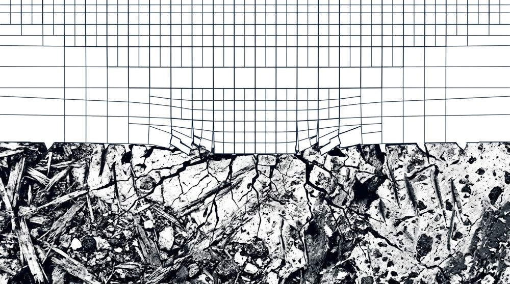
Ateljee – järjestelmä ja metodit
Perustana on orkestroimani kehittyvä järjestelmä: teosten luomisen metodit, lähdekirjasto ja tehtäviinsä erikoistuneet solut. Kirjasto tukee Ateljeen kehitystä ja on myös teosten raaka-ainetta. Valtaosa lähteistä on kirjallisia. Mukana on myös omaa kuvamateriaaliani.
Yksi metodi tuottaa kuratoitavakseni kuvamassaa: valikoiduista käsitteistä haetaan merkityksellisiä törmäyksiä, jotka visualisoidaan laajalla pilvipohjaisella kuvageneraattorilla. Toisen lähtökohta on oma kuva-arkisto, jolla hienosäädän paikallista kuvageneraattoria. Kolmannessa metodissa ajan muovaama mosaiikkitaideteokseni valjastetaan ihmisen ja koneen yhteiseksi Troijan hevoseksi. Neljäs on symmetria kohinasta, jolle käsitepari antaa aineen. Viides on silmukka metodista toiseen. Metodeja syntyy ja karsiutuu. Kolmatta kieltä etsin myös äänestä.
Tavoittelen katsojassa kokemusta ennennäkemättömästä ja vieraasta, mutta samalla myös inhimillisestä: tarinankerronta, paikalliset kuva-arkistot ja oma historiani ovat sen ankkureita. Kuratointi ei ole valinnaista vaan edellytys: se on tapa, jolla voin allekirjoittaa teokset, vaikka ne ovatkin minun ja koneen yhteistä kieltä.
Kolmannen kielen etsintä on myös kieltäytymistä – keskinkertaisuudesta ja valmiiksi paketoidusta kaupallisen tekoälyn estetiikasta. Ateljee kehittyy ja morfautuu ajassa kuten kieli, jota ei yksin voi määritellä.
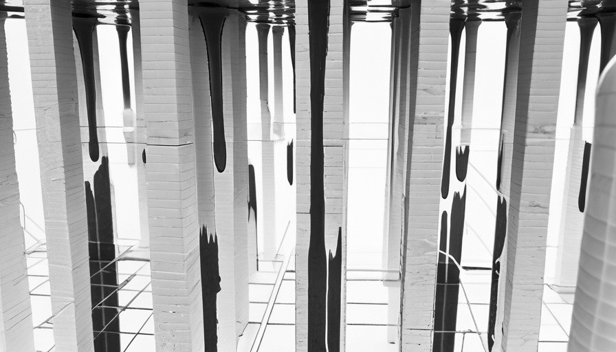
Metodi 1 – Törmäytys pilvimallilla
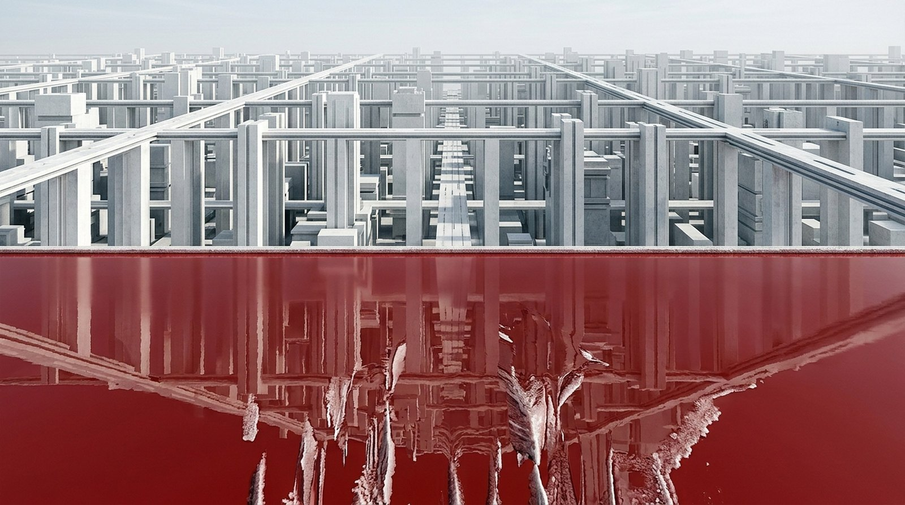
Mittakaava etäisyydessä
Kaksi ajatusta törmäytettiin: Kepesin (1972) tulevaisuuteen katsova monumentti, jossa vedenpuhdistamokin voi olla julkinen muistomerkki, ja Triggin (2006) rappio, jossa rakennus antaa periksi ajalle. Ajatus siitä, että monumentin aika voidaan kääntää kahteen suuntaan – eteenpäin tai rappioon – ja että pysyvyyden paikan ottaa tällöin mittakaava, joka ei asu rakennuksessa vaan katsojan etäisyydessä siitä. Kone sanoitti parin kuvaksi ja tuotti useita versioita; tämä on niistä etäännytetty, jossa side lähteisiin on löysempi.
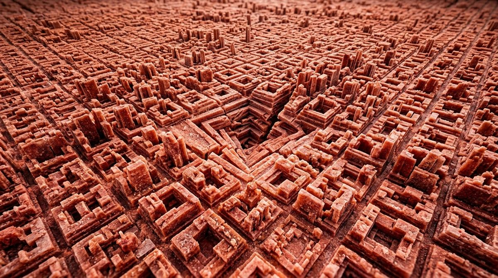
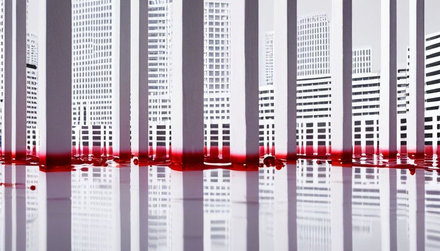
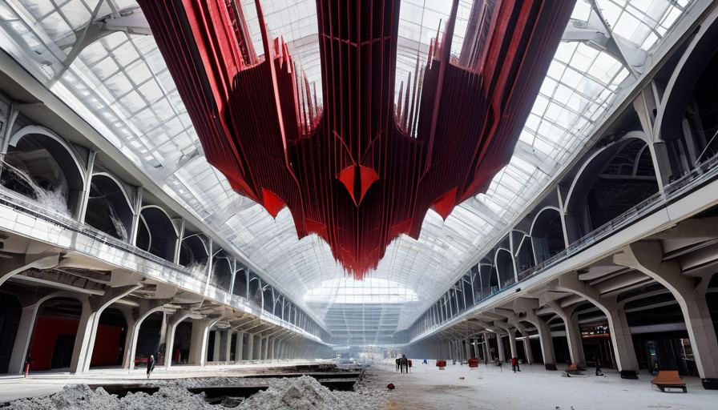
Mittakaava etäisyydessä – sarja
Samat lähteet – Kepesin tulevaisuuteen katsova monumentti ja Triggin rappio, jossa mittakaava korvaa pysyvyyden – sivun 3 kuva mukaan lukien neljänä eri kuvana. Ne syntyivät kolmessa erässä: kahdesti törmäytyksestä suoraan ja kerran kokeessa, jossa sama sanoitus ajettiin neljän eri avoimen kuvamallin läpi rinnakkain ja tulokset valittiin tietämättä mikä kone teki minkäkin.
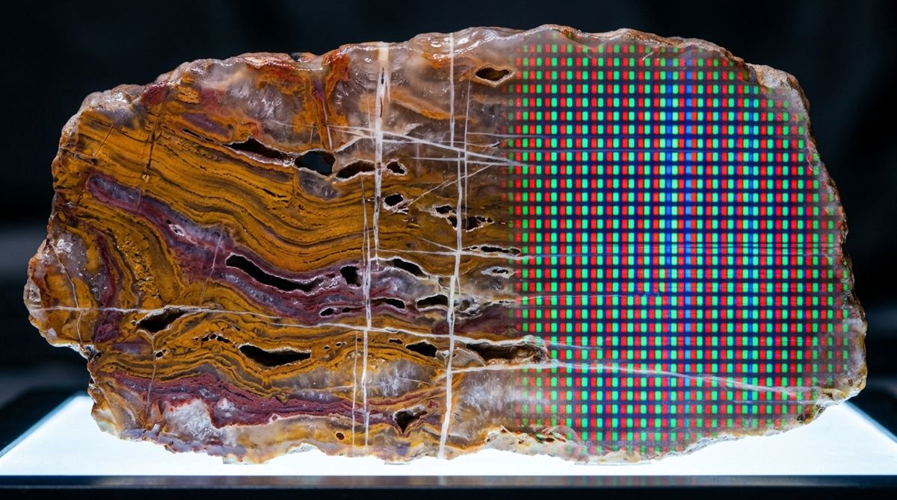
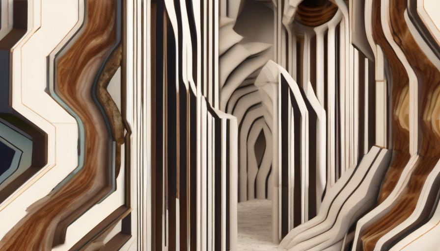
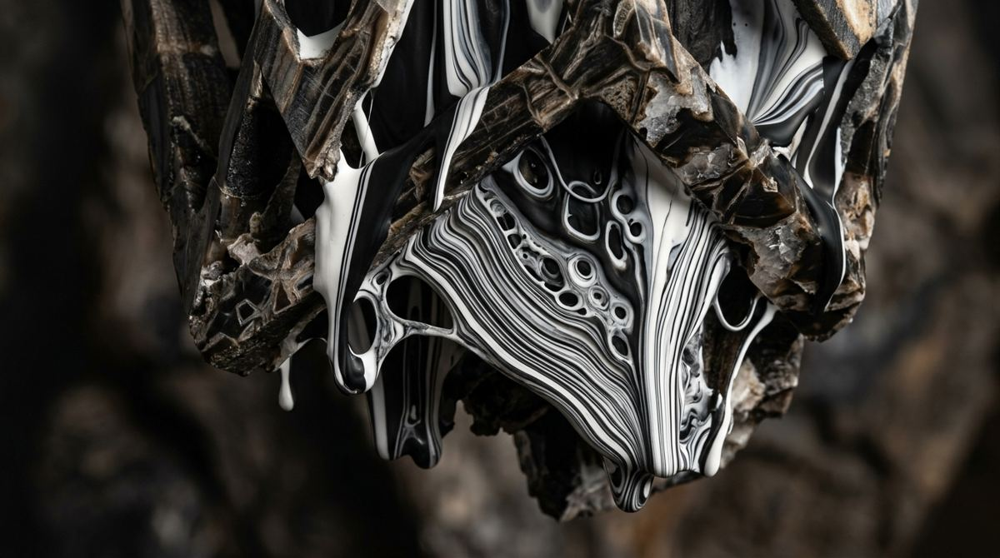
Sokea synty – sarja
Kaksi ajatusta törmäytettiin: Caillois'n (1985) kivet, joiden kuviot ovat syntyneet ilman tekijää ja ilman viestiä, ja Kanen (2014) varhainen tietokonegrafiikka, jossa kone laski värin numeroina näkemättä sitä koskaan. Ajatus siitä, että kuva voi syntyä sokeana omalle synnylleen – kivi kasvaa kuvionsa näkemättä ja kone laskee väriä näkemättä – ja että katse tulee molemmissa vasta jälkikäteen. Se on sama hetki kuin kuratointi. Kolme versiota samasta parista; iso kuva on lähinnä lähteitä.
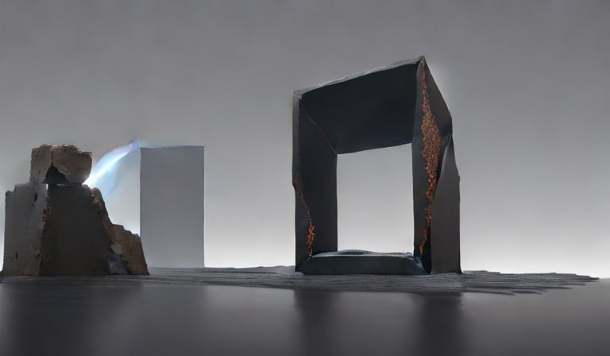
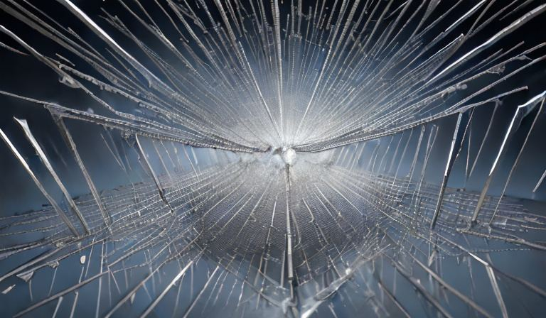
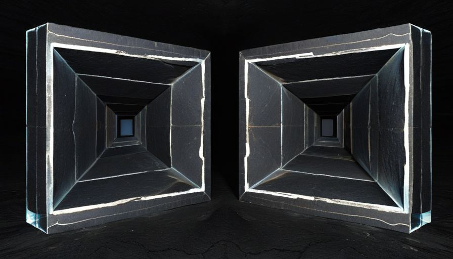
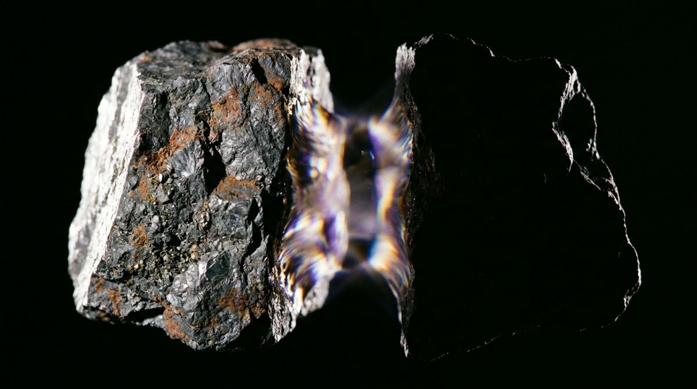
Sisäpisteen löytö – sarja
Tässä toinen osapuoli on Ateljeen oma ajatus: arkiston järjestys ratkaisee, kuinka monta uutta yhteyttä siitä voi löytää. Se törmäytettiin Swansonin (1986) "löytämättömään julkiseen tietoon": kaksi jo julkaistua tietoa muodostaa löydön vasta, kun joku lukee ne yhdessä, ja mitä kauempana ne ovat toisistaan, sitä isompi löytö. Yhdessä ne sanovat, että löytöjä syntyy eniten välitilassa – ei täydessä järjestyksessä eikä kaaoksessa, vaan siinä, missä erottelu on juuri ja juuri vielä mahdollista. Neljä kuvaa samasta käsiteparista, kahdella sanoituksella ja kolmella eri kuvamallilla; kolme niistä valittiin tietämättä, mikä kone teki minkäkin, jotta valinta ei seuraisi mallia vaan kuvaa.
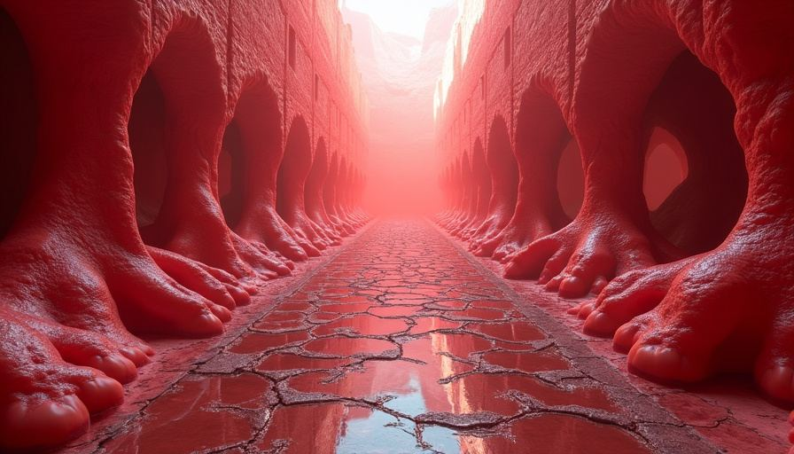
Kiasma ja läpinäkyvyys
Kaksi vastakkaista väitettä törmäytettiin. Youngblood (1970) uskoi, että televisio ja laajennettu elokuva näyttävät lopulta kaiken: katsojan, katsotun ja itse katsomisen. Merleau-Ponty (1968) väitti päinvastaista: käsi, joka yrittää koskettaa omaa kosketustaan, epäonnistuu aina, ja katseessa on sokea piste, jota se ei voi itse nähdä. Kuvan valkoinen aukko on tuo sokea piste keskellä kirkasta näkymää. Tämä versio tehtiin 'kärjistys'-kokeessa: sama kohta lähteiden välillä ajettiin pilvipohjaisella kuvageneraattorilla uudelleen, nyt villimmällä ja vapaammalla sanoituksella. 40 kuvasta vain tämä yksi kesti.
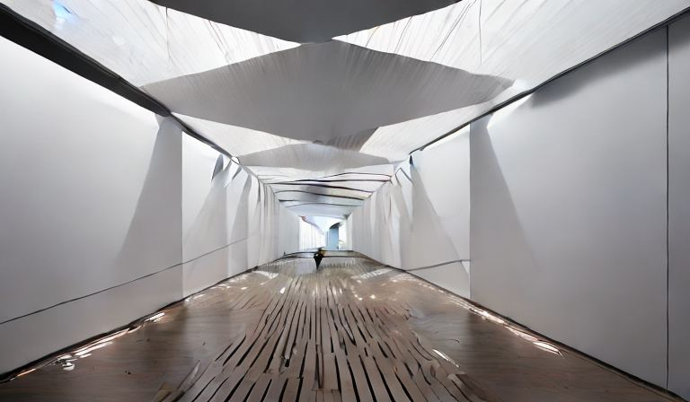
Kynnys
Kuva generoitiin kahden lähteen törmäyksestä: Van Gennepin (1909) siirtymäriitin välivaihe, hetki jolloin ihminen ei ole enää vanhaa eikä vielä uutta, ja Zumthorin (2006) arkkitehtuurin tunnelma, joka syntyy ovilla, käytävissä ja hämärässä. Molemmat asuvat kynnyksellä: muutos tapahtuu juuri siinä, mikä ei ole vielä mitään. Tämä versio tehtiin 'vahvistus'-kokeessa: sama sanoitus ajettiin uudelleen kahdella kuvamallilla, jotka olivat edellisessä vertailussa osoittautuneet vahvimmiksi. Kuva valittiin tietämättä, kumpi malli sen teki.
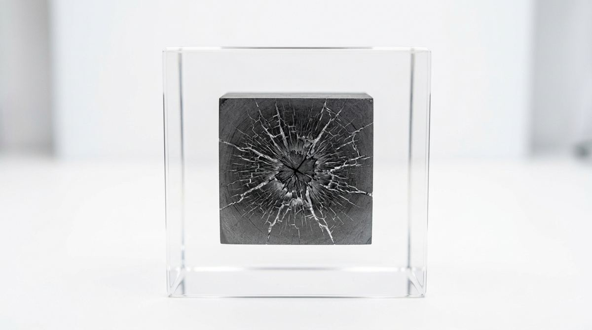
Toinen kello
Kuva generoitiin kahden lähteen törmäyksestä: Huin (2019) ajatus, että itseään toistava järjestelmä tarvitsee ulkopuolisen yllätyksen, jottei se sulkeudu, ja Paskin (1976) keskusteluteoria, jossa uutta syntyy vasta kahden itsenäisen keskustelijan välillä. Yhdessä ne sanovat, ettei silmukka tarvitse sattumaa vaan toisen kellon: kun järjestelmä jakautuu kahteen osaan, jotka eivät ehdi seurata toisiaan, syntyy aito yllätys ilman noppaa. Tämä on koneen tuottamista versioista etäännytetty, jossa side lähteisiin on löysempi.
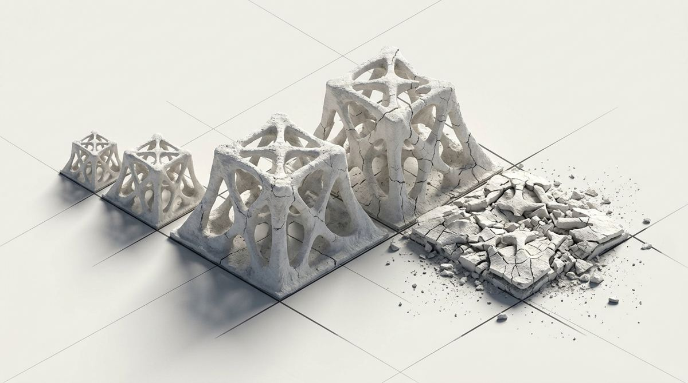
Sääntö ennen muotoa
Kuva generoitiin kahden lähteen törmäyksestä: Thompsonin (1917) havainto, että eläinlajien muodot eroavat toisistaan kuin sama piirros venytetyllä ruutupaperilla, ja Gerstnerin (1968) ohjelmoitu muotoilu, jossa ratkaisujen sijaan suunnitellaan sääntö, josta kirjasinperheen kaikki koot seuraavat yhdestä kertoimesta. Kumpikaan ei piirrä muotoa; molemmat asettavat säännön, jonka tulos muoto on.
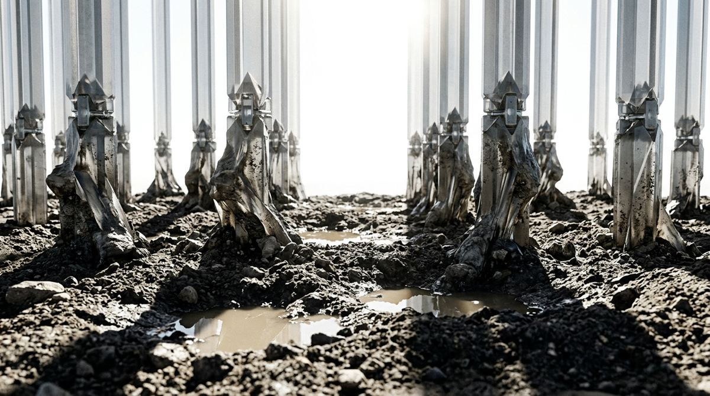
Muodoton kahdesti
Kuva generoitiin kahden lähteen törmäyksestä: Kepesin kokoelmassa Structure in Art and in Science (1965) Max Bill kutsuu muodottomaksi sitä, mihin taide putoaa kun rakenne pettää, ja Bois ja Krauss (1997) kääntävät saman sanan toisin päin: muodoton ei ole muodon puute vaan teko, jolla muoto puretaan tarkoituksella. Ajatus siitä, että sama sana 'muodoton' tarkoittaa peilikuvana kahta vastakkaista asiaa: toiselle se on rakenteen romahdus, toiselle rakenteen synty samasta sekasortoisesta aineksesta. Tämä versio on koneen tuottamista vaihtoehdoista lähellä lähteitä.
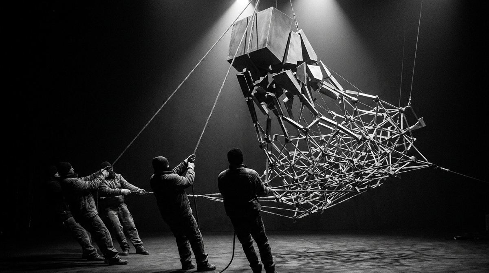
Ohje joka ei kuvaa
Kuva generoitiin kahden lähteen törmäyksestä: Yvonne Rainerin (1974) tanssipartituurit, joissa jokainen esiintyjä saa numeroidun ohjeen mutta jää säännön sisään päättämään esityksen aikana, ja Prusinkiewiczin ja Lindenmayerin (1990) kasvien kasvusäännöt, joissa yksinkertaista sääntöä toistetaan, kunnes muoto on valmis, ilman ihmistä. Kummassakaan ohje ei kuvaa lopputulosta vaan tuottaa sen – ero on siinä, jääkö ihminen säännön sisälle päättämään. Tämä versio otti etäisyyttä lähteisiin toisella kahdesta tavasta, jotka ohje tarjosi.
Metodi 5 – Fuusio-iterointi · metodi 2 – oma arkisto ja paikallinen malli
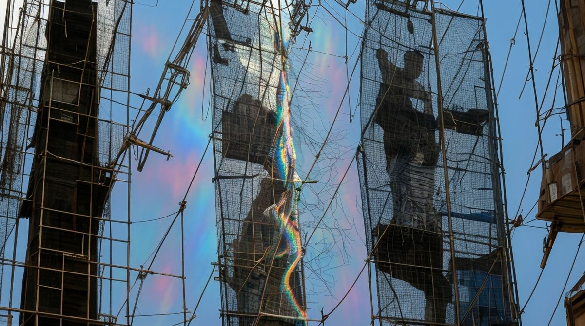
Verkko ja huone
Tämä kuva kiersi neljässä vaiheessa koneelta toiselle. Lähtökuva on oman pienen mallin tuottama, omilla valokuvilla opetettu ja käsin valittu. Se annettiin pilvimallille pohjaksi yhdessä kahden ajatuksen kanssa: Albersin (1963) havainto, ettei väriä koskaan nähdä yksin vaan aina naapurinsa kanssa, ja Kahnin (1999) kertomus siitä, miten Cage kuuli kaiuttomassa huoneessa silti hermostonsa ja verenkiertonsa. Yhdessä ne sanovat, ettei yksinäistä signaalia ole: värillä suhde tarkoittaa naapuruutta, äänellä huonetta. Tulos vietiin takaisin omalle mallille ja vielä kerran pilveen; joka kierroksella kuratoin ehdokkaista yhden jatkoon.
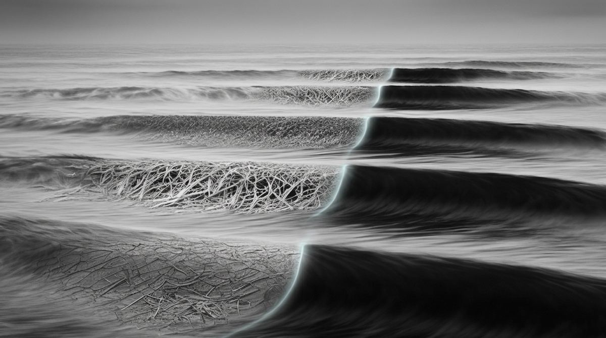
Kertosäe kelometsässä
Kuva syntyi nelivaiheisena kiertona: lähtökuva pohjoisesta kelometsästä (kaksi identtistä aaltoa, joista jälkimmäinen murtuu toisin) ei ole valokuva vaan oman pienen mallin tuottama kuva – malli on koulutettu omilla pohjoisilla valokuvilla – ja se valittiin käsin 228 kuvan sadosta (viisi läpäisi). Lähtökuva annettiin ensin pilvipohjaiselle kuvageneraattorille sanoituksen kanssa, sitten omalle pienelle mallille pintaa hakemaan, ja lopuksi vielä kerran pilvipohjaiselle koneelle samalla sanoituksella. Sanoitus syntyi kahden ajatuksen törmäyksestä: Kramsun (1887) kertosäe, joka toistuu viidesti sanatarkasti ja muuttuu yhden sanan verran vasta kuudennella kerralla, ja Gerstnerin (1968) kirjassa esitetty Frieder Naken ohjelma, jota voi toistaa loputtomasti ilman että sama tulos syntyy kahdesti. Runon kertosäe toimii kuin ohjelma-ajo: sääntö toistuu samana ja muuttuu tarkoituksella juuri viimeisellä kerralla.
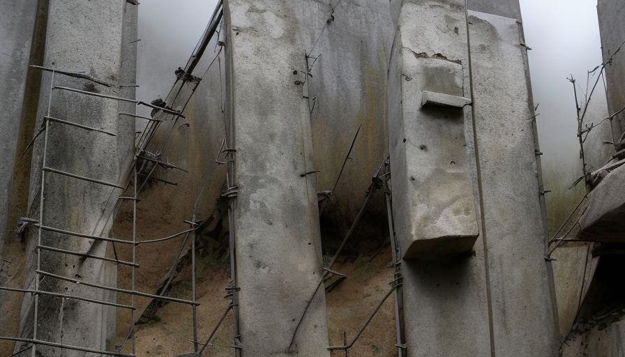
Rakenne toisesta aineesta
Kuva syntyi rakennesiirtokokeessa. Aiemmin kuratoimastani kuvasta, joka oli syntynyt Kepesin tulevaisuuteen katsovan monumentin ja Triggin rappion törmäyksestä, irrotettiin vain rakenne: syvyys. Oma paikallinen kuvamallini, joka on opetettu pohjoisilla kelometsäkuvillani, tuotti rakenteen sisään uuden pinnan. Ajatus on sama kuin lähtökuvassa: pysyvyyden paikan ottaa mittakaava, joka ei asu rakennuksessa vaan katsojan etäisyydessä siitä. Kokeen kysymys oli, syntyykö rakenteen ja vieraan pinnan yhdistelmästä jotain, mitä kumpikaan lähtökuva ei yksin ollut.
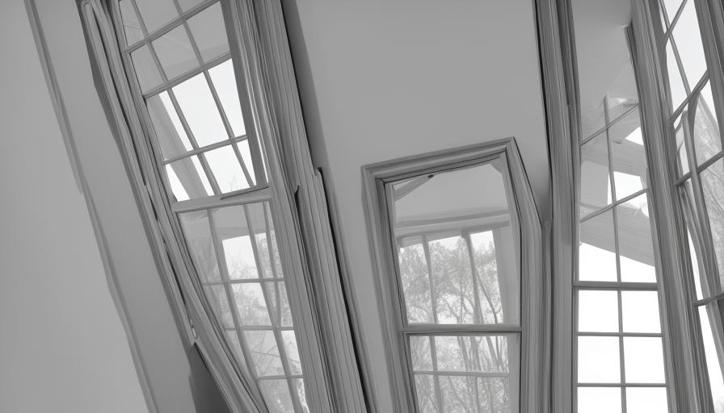
Pintakuvion koe
Kuva syntyi omalla koneellani paikallisella kuvamallilla, joka oli opetettu omilla valokuvillani: kymmeniä kuvia rytmisistä pinnoista ja struktuureista, rei'itetyistä julkisivuista mäntyrunkoihin ja veden kimallukseen. Tässä metodissa ei törmäytetä kahta kirjallista lähdettä, eikä kuvalle anneta sanoitusta, joka kuvailisi lopputuloksen. Kädenjälki tulee opetusaineiston historiasta, ei sanoista.
Metodi 3 – Kilpikonna
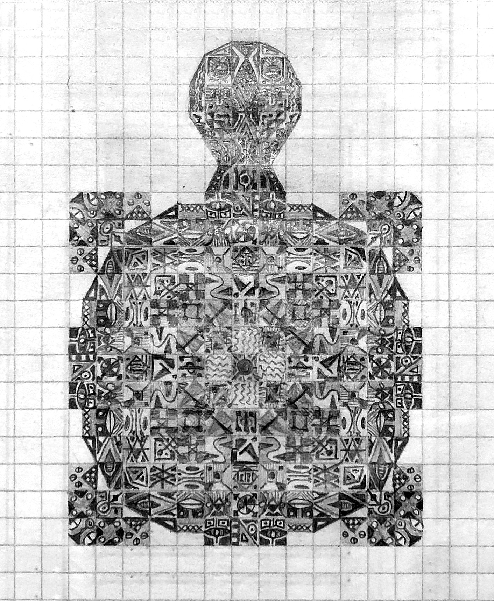
Siemen, 1990
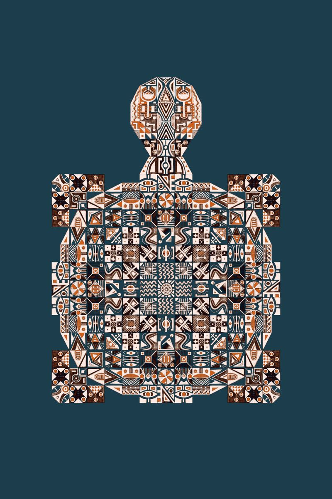
Kilpikonna, värillinen taulu
Ajan muovaama mosaiikkiteos – abstrakti, symmetriaan perustuva kilpikonna – on ihmisen ja koneen yhteinen Troijan hevonen. Koneelle syötetään sen logiikka: symmetria, palojen kieli, sommittelu. Etsitään muita samaan logiikkaan perustuvia hahmoja, uusia rakennuspalikoita ja lopulta liikettä. Yksittäinen palakin voi olla oma videoteoksensa.
Liikekokeita
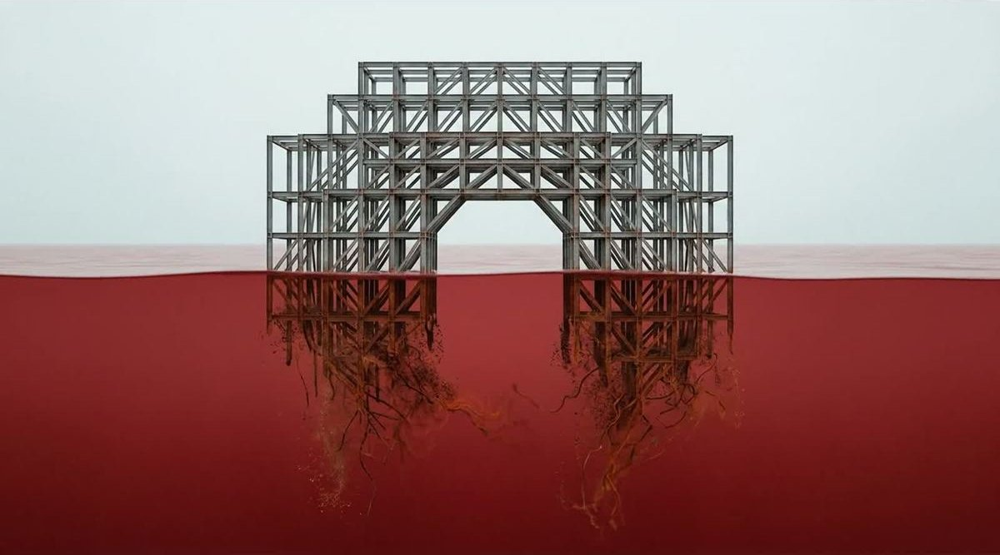
Ruoste liukenee ajelehtien
Lähtökuva syntyi samasta parista kuin sivujen 3 ja 4 kuvat: Kepesin tulevaisuuteen katsova monumentti ja Triggin rappio, jossa mittakaava korvaa pysyvyyden. Sitten still-kuvasta luettiin sen oma liike ja annettiin ohjeena videomallille: vedenpinnan alla teräs hajoaa hitaasti ajelehtivaksi ruostepölyksi, punainen pinta aaltoilee ja heijastukset huojuvat, mutta rakenne pysyy paikallaan harmaata taivasta vasten.
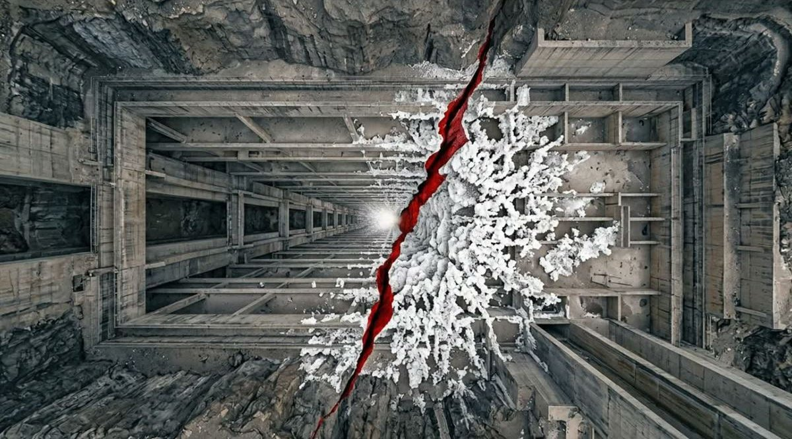
Kaksi kelloa
Video syntyi samasta Kepesin ja Triggin parista kuin edellinen: monumentti ja rappio. Klippi on osa liikekoetta, jossa testattiin, kestääkö kuva kaksi toisistaan riippumatonta liikettä ilman yhteistä syytä. Valokiilassa leijuva pöly saa nopean liikkeen, joka ylittää kiilan kahdeksan kertaa klipin aikana, ja seinän kiteytymä hitauden. Kaksi kelloa, jotka eivät koskaan käy samaan tahtiin eivätkä selitä toisiaan.
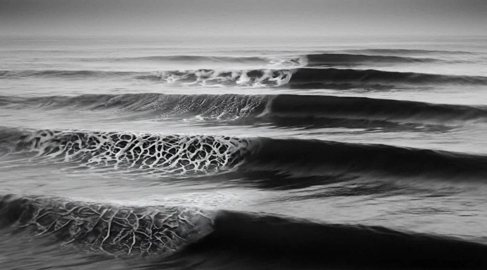
Kertosäeaalto
Video syntyi kahdessa vaiheessa: oma pieni malli maalasi toistuvien aaltojen maiseman omista pohjoisista valokuvistani, ja pilvimalli muunsi sitä yhdellä säännöllä, joka on lainattu Kramsun (1887) runojen kertosäkeistä ja Gerstnerin (1968) ohjelmoidusta muotoilusta – muutos osuu aina säkeen alkuun, loppu ei liiku koskaan. Videossa sama laki pannaan liikkeeseen: kuvio kasvaa vain aallon etureunassa.
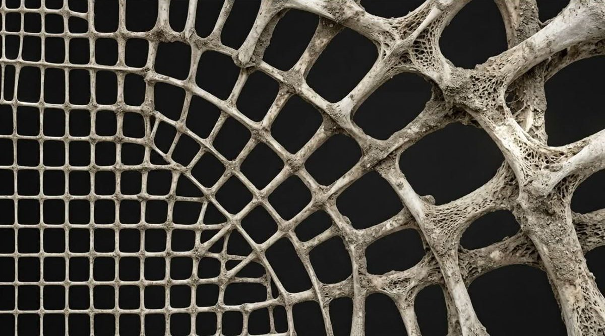
Luuverkko
Video syntyi samasta käsiteparista kuin sivun 9 kuva Sääntö ennen muotoa: Thompsonin venytetty ruutupaperi, jolla eläinlajit muuttuvat toisikseen, ja Gerstnerin sääntö, josta muoto seuraa. Alumiinitankojen ja luukudoksen risteymä on koordinaatisto, joka taipuu kuin eläisi. Videossa verkko hengittää: sääntö pysyy, mittasuhteet liikkuvat.
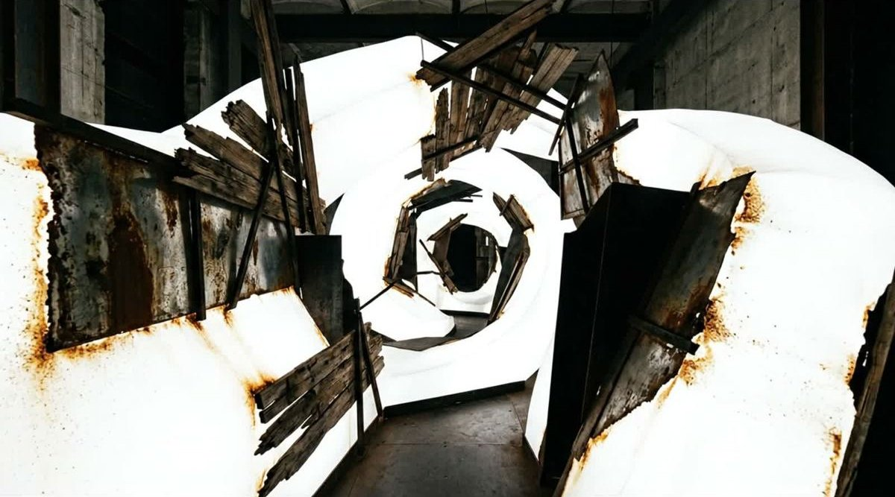
Hehkuva kierre
Video syntyi samasta käsiteparista kuin sivun 8 kuva: Van Gennepin siirtymäriitin välivaihe ja Zumthorin arkkitehtuurin tunnelma, jotka molemmat asuvat kynnyksellä. Valkoiseksi hehkuva käytävä, jota lahonneet lankut ja ruostunut teräs lävistävät. Valo hengittää ja ruoste leviää.
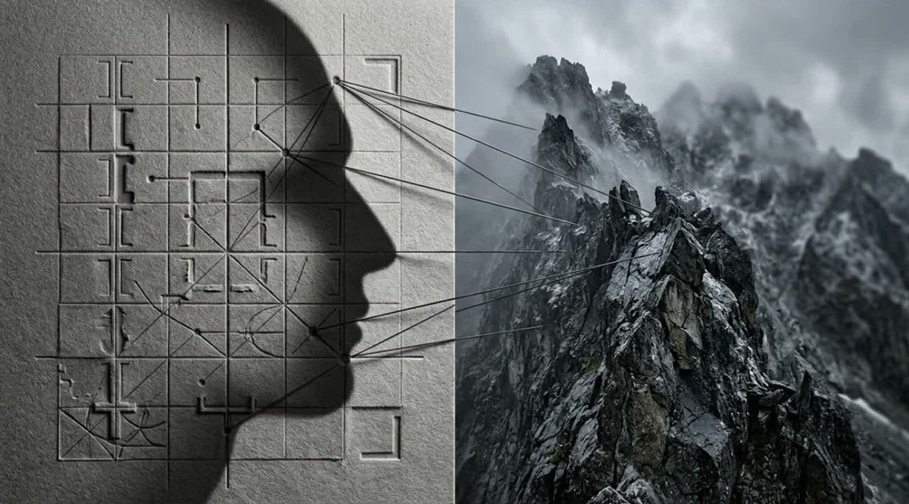
Profiili ja vuori
Video syntyi kahden ajatuksen törmäyksestä: Grambsin ja Levinen (2015) kuvailijan sanakirja, joka opettaa silmää sanoilla ja antaa nenän profiilille oman sanastonsa, ja Kepesin näkemisen kasvatus, Education of Vision (1965), joka varoittaa sanoista ja opettaa silmää muodolla. Kumpikin tarvitsee salaa toisen välineen. Kasvojen varjo kohopaperilla ja neulalangat, jotka sitovat piirretyn järjestyksen vuorenharjanteeseen: kartta ja maasto kytkettyinä lanka langalta. Usva virtaa vuoren yli, langat eivät värähdä.
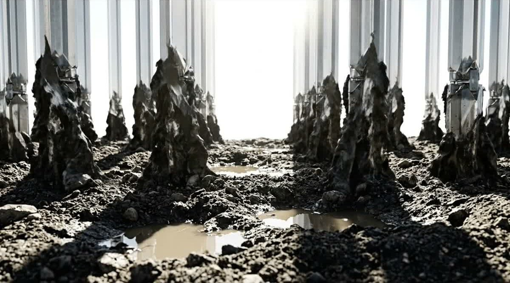
Kellonvaihto
Video syntyi samasta käsiteparista kuin sivun 9 kuva Muodoton kahdesti: Max Billin muodoton, johon taide putoaa kun rakenne pettää, ja Bois'n ja Kraussin muodoton, joka on teko muotoa vastaan. Liikekokeessa pari vietiin aikaan: still-kuvan aineille annettiin ohjeessa toistensa liikenopeudet. Teräspylväät liikkuvat veden tahtiin, mutavesi ja sen heijastukset pysyvät paikallaan.
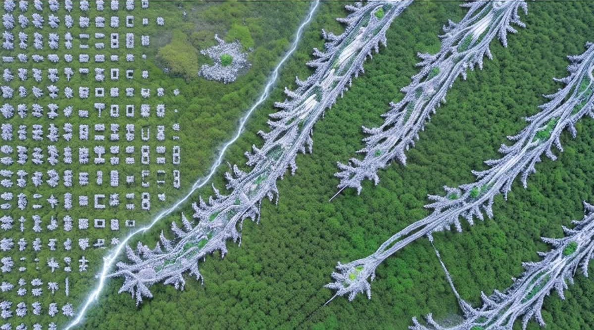
Jälki ilman liikettä
Lähtökuva on oman kelometsämallini tuottama ilmakuva, jossa metsä näyttää reikäkortilta. Pilvimalli muunsi sitä kahden ajatuksen törmäyksellä: Paulaharjun (1927) Lappi, jossa hallinnon järjestys ei levinnyt maastoon ruudukkona vaan kulki merkkeinä eläinten korvissa ja kirjoina, ja Siegertin (2015) kulttuuritekniikat, ovet, ruudukot ja rekisterit, jotka tekevät järjestyksen. Ruudukko loppuu metsän rajaan. Liikekokeessa raja uusiutuu.
Metodi 4 – Baabelin kone
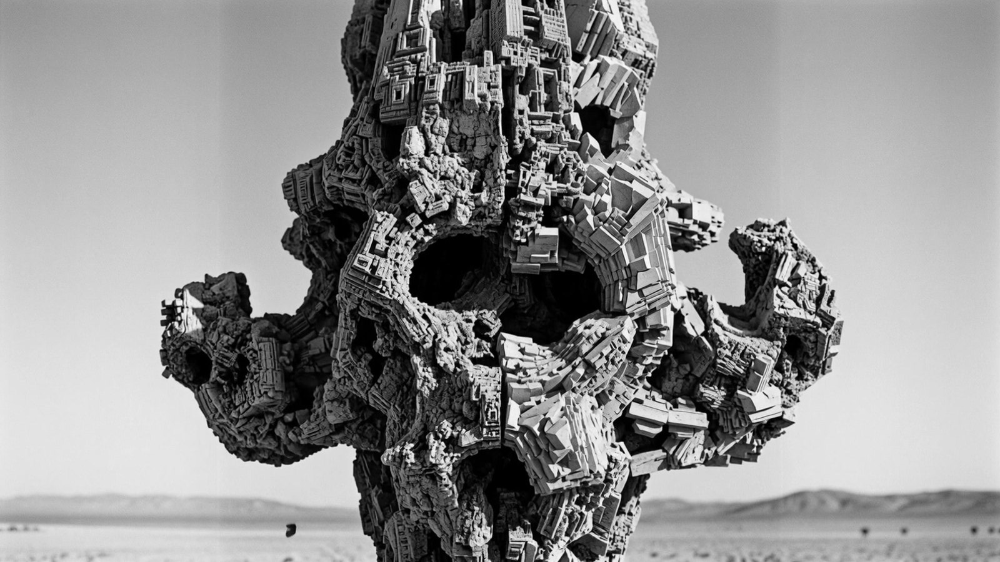
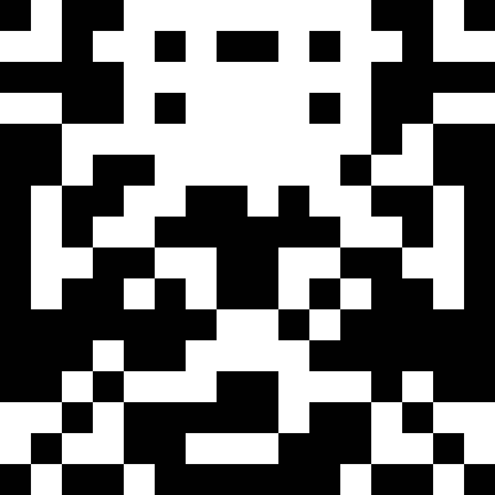
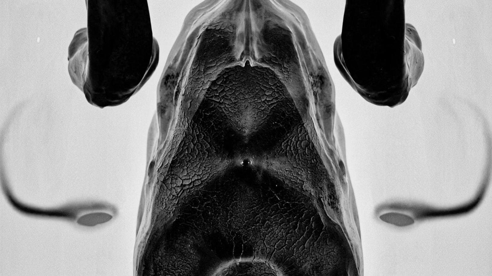
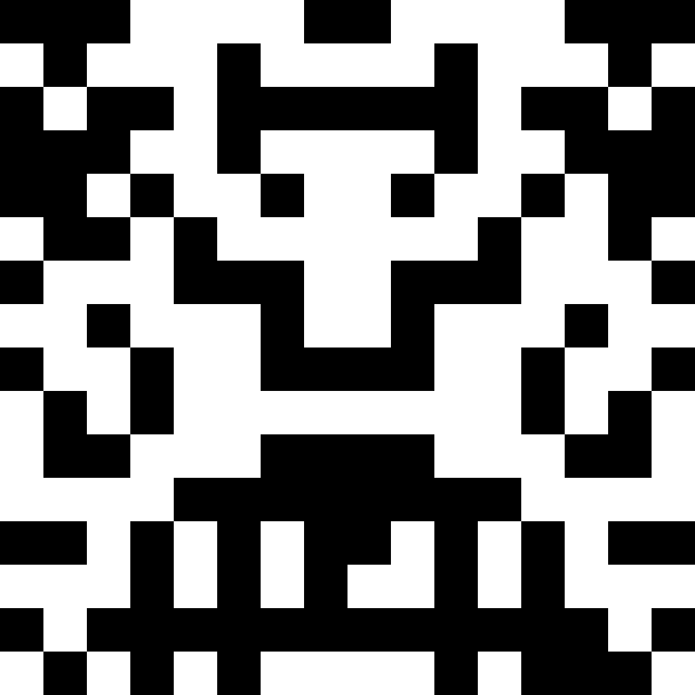
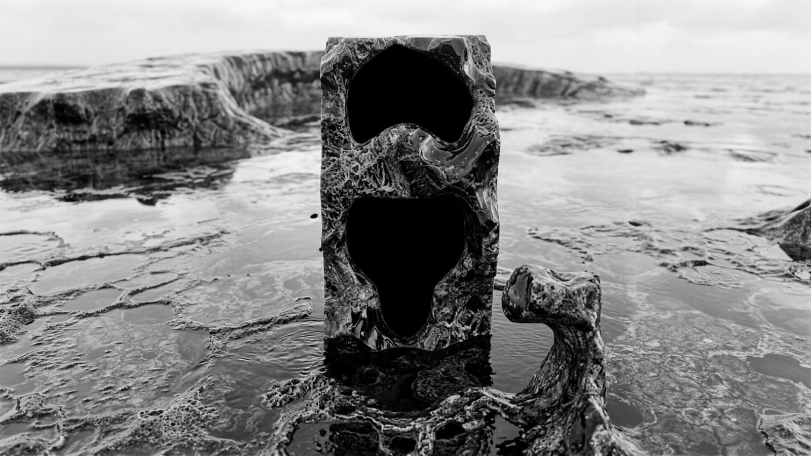
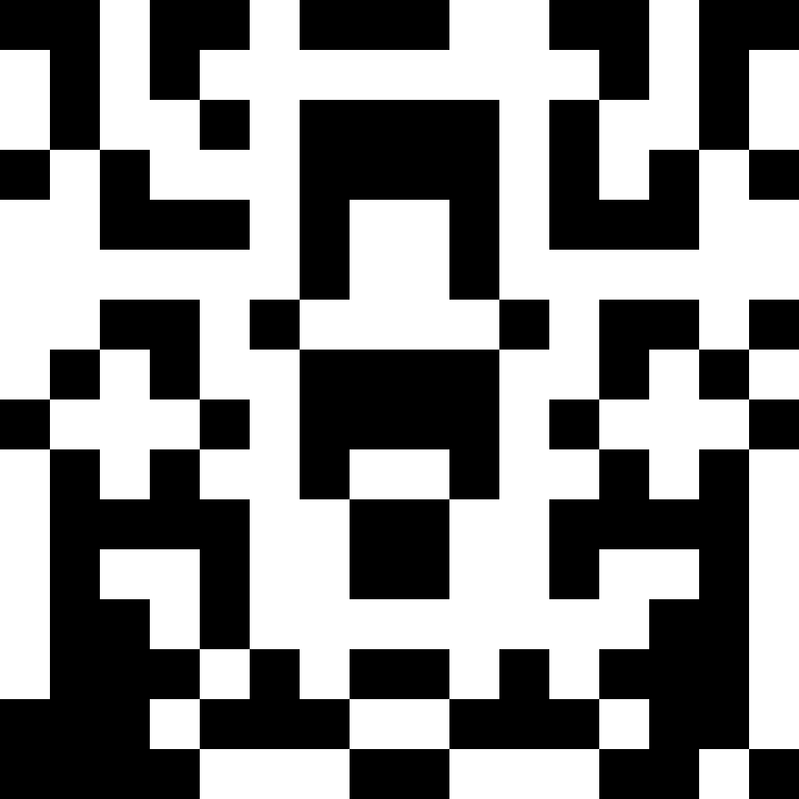
Baabelin kone
Neljä mustavalkoista kuvaa. Kone arpoo 8 × 16 ruudun mustavalkoisen ruudukon, peilaa sen 16 × 16 ruudukoksi ja kääntää satunnaisesti muutaman ruudun, jotta kuva ei ole täysin symmetrinen. Puolikkaan pikselikuvan vaihtoehtoja on enemmän kuin sekunteja maailmankaikkeuden iässä. Ruudukko pehmennetään ja rajataan mustavalkoiseksi siluetiksi, joka annetaan kuvamallille. Aineen antaa kahden kirjastolähteen yhdessä luettu ajatus tai oma valokuva.
Tornin kaksi kylkeä elävät eri aikaa, toinen puoli rapautuu (Hui 2019, Pask 1976). Tummunut nahka halkeilee ja elää. Musta monoliitti seisoo vedessä; vesi, tuuli ja pisarat liikkuvat, monoliitti ei. Kuuramuodon ympäri kiertää valo. Mitään ei näe yksin, vasta ympäristö näyttää sen (Albers 1963, Kahn 1999). Neljä yhteen leikattua klippiä on kuratoitu 15 koeajosta.
Ateljee – luonnoksia ja koeajoja, lokakuu 2026
Viidessä ensimmäisessä metodissa annan koneelle ainesta: käsitteitä, omia valokuviani, omaa teostani. Metodissa 6 annan sille omat valintani, ja se etsii niistä suunnan. Metodissa 7 kolmas käsite ei jää kuvaksi, vaan muuttuu teoksi tilassa.
Metodi 6 – Suunta
Kasoissa on jotain, mitä en nimeä. Kone etsii sen; se ei tartu siihen, miltä kuvani näyttävät, vaan siihen, mikä erottaa valitut muista. Kädenjälkeni ei tule kuvasta, vaan lähtökohdan valinnasta.
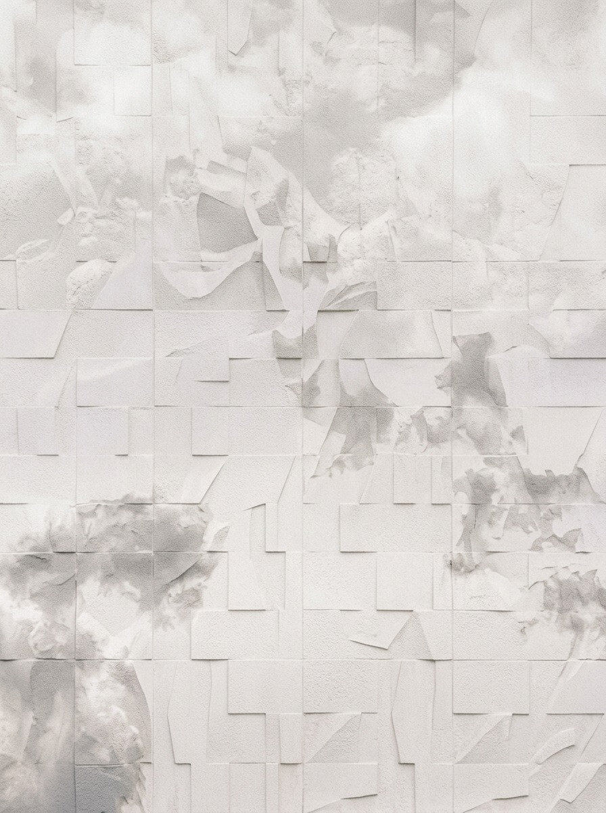
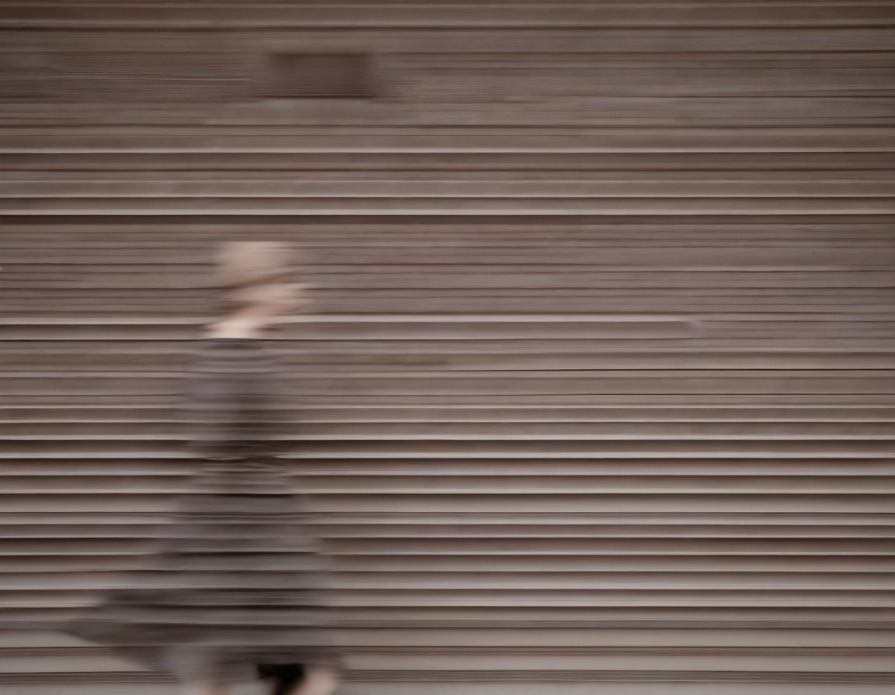
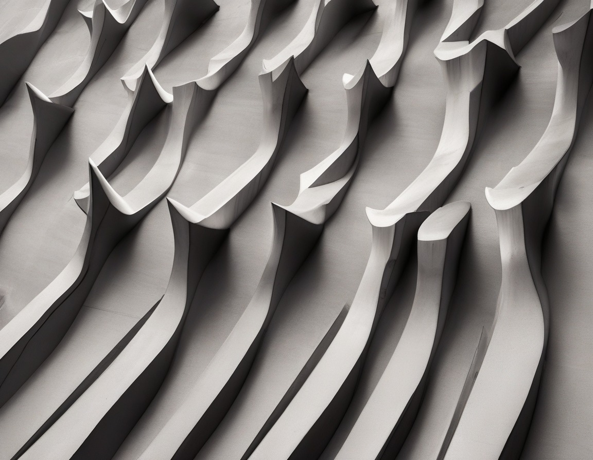
Metodi 7 – Video vapaana kehyksestään
Videon muuttamista valoksi tai muodoksi on tehty videotaiteessa jo 1960-luvulta. Tässä metodissa tutkin, miten eri käsitteet vapauttavat videon kehyksestään tilaan. Metodi jatkaa viidettä, fuusio-iterointia: 3D-tilaan viedään muiden metodien tuotoksia.
Nämä kuvat ovat kolmen käsitteen ketjuja. Kaksi lähdekirjaston käsitettä valitaan, koska niiden välille syntyy jännite, ja niistä syntyy ensin kuva pilvimallilla (metodi 1). Kolmas käsite ajaa 3D-moottoria ja muuttaa kuvan tapaa olla tilassa. Myös se on haettu lähteestä, ja moottori toteuttaa sen fysiikkana: painovoimana, poimuna tai kuvan palaamisena itseensä.
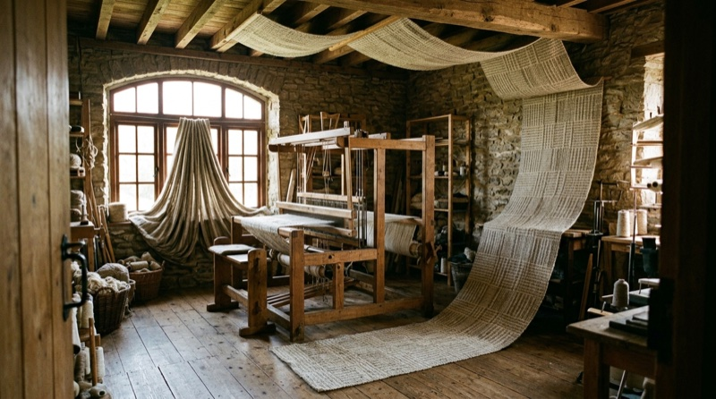
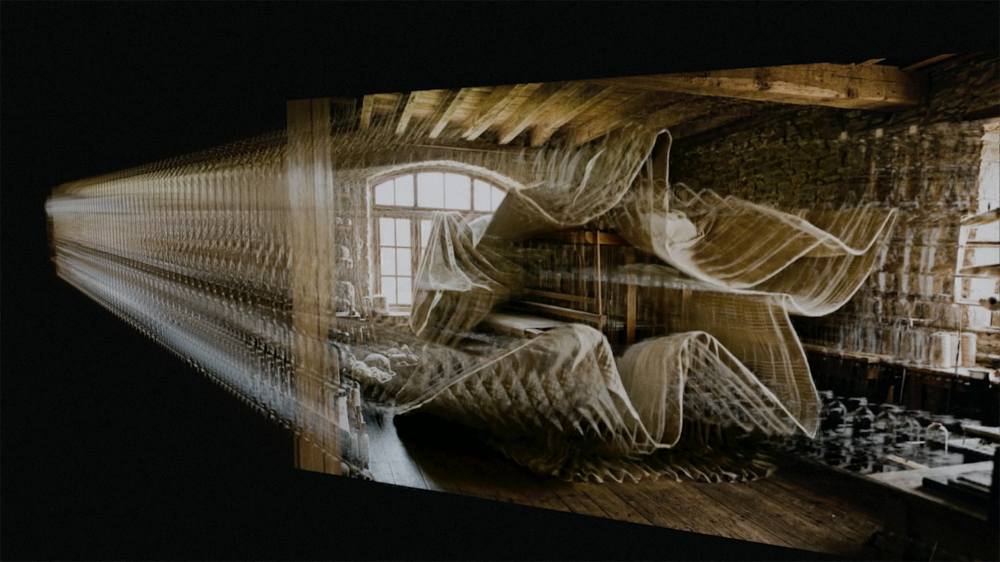
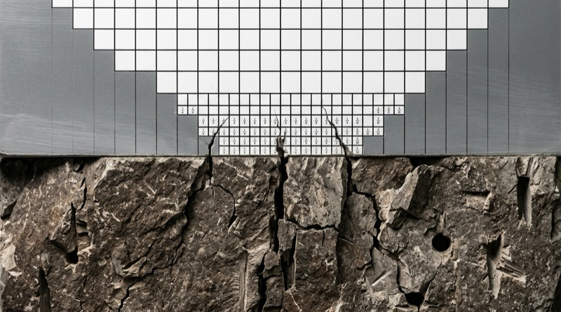
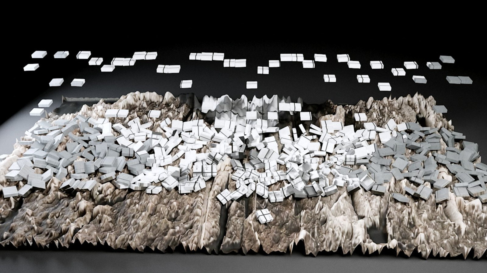
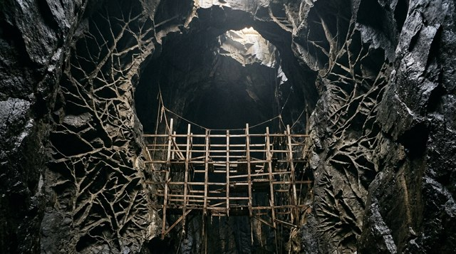
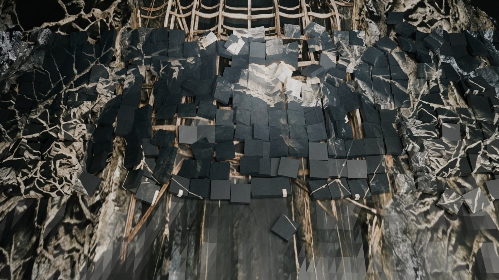
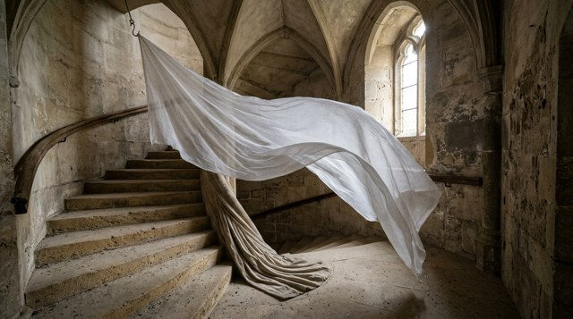
Ateljeen muoto
Ateljeen kasvurenkaat
Kehittyvä tiedostojärjestelmä perustuu teosten luomisen metodeihin sekä lähdekirjastoon. Värit ovat kategorioita, kirkkaus tiedoston koko, säde ikä: keskus toukokuu 2026, uloin rengas lokakuu. Omat valokuvat eivät mahdu näihin aikarenkaisiin, ne on näytetty taustan tähtipölynä. Tulevat lähteet odottavat reunan takana.
- Oma arkisto
- omat valokuvat, teokset ja työt – 618
- Kirjasto
- kirjaston lähteet – 2 502
- lähteiden tunnistekortit – 2 486
- luennat ja tiivistelmät – 3 231
- tulevat lähteet
- Kone
- koneen roolit – 85
- skriptit – 2 339
- Teokset
- generoidut kuvat – 8 396
- kuratoidut – 131
- valikoidut – 80
- klipit – 300
- Työhuone
- ristiluennat – 167
- kaanon ja säännöt – 54
- kartat ja inbox – 472
- viestit ja taskit – 6 932
- koneen työjälki – 6 240
Ateljee soluina
Syyskuun kehitysnäkymä verkosta rakentuu, ja Ateljee toimii nyt soluina: jokaisella solulla on oma tehtävänsä, kuten lähteiden haku, kirjastointi, kokeet tai keittiö, jossa kaksi tai kolme lähdetekstiä keskustelee keskenään. Kolmas kieli syntyy solujen vuorovaikutuksessa. Solut toimivat kahdella koneella ja pilvessä.
- minä
- toimiva solu (25)
- varasto (18)
solun tehtävät:
- kirjasto ja lähteet
- kone
- keskustelut ja keittiöt
- kokeet ja kuvat
Langat ovat mitattuja virtauksia viikon ajalta. Oranssit kulkevat minun kautta, harmaat koneen voimin. Luvut 26.10.2026.
Mitä solut tekevät:
Solun ympärillä olevat kaaret kertovat autonomian 0–4 eli sen, mitä solu tekee ilman sanaani: 0 ei mitään · 1 ehdottaa · 2 kokeilee · 3 toimii ajastettuna · 4 oma kaanon (ei vielä yhdelläkään).
- 1varmuuskopio pilveen
- 2posti, tuotokset koneelta toiselle
- 3talonmies kokoaa muistiinpanot ja tallentaa
- 4kirjastointi: lähteiden luku ja kortitus
- 5työkeskustelut: ajatteluni, suunnittelu
- 6lähdehaku, uusia lähteitä viikottain
- 7solujen muisti tuo keskusteluun solun tilan
- 8peili kopioi työkoneen taustakoneelle
- 9linssikortit kirjastoon syvähaun raporteista
- 10kaukosilta etäisille lähdepareille
- 11käsitesillan teko, jota toinen kone opponoi
- 12skoutti: lähdehaku 3. kielen kysymyksille
- 13kirje: ajastettu kooste taustakoneen työstä
- 14säännölliset kokeet kuratoitavaksi
- 15silmukka: kysymysten kartoitus ja ratkaisu
- 16keittiöt: 2-3 lähdetekstiä keskustelee
- 17taidevideoiden metodit ja niiden kokeita
- 18kuratoimastani aineksesta kootut teokset
- 19lukuaallot käynnistävät lähteiden luennan
- 20ideoija kehittää itse uusia ideoita
- 21katsoja esikatselmoi visuaalista materiaalia
- 22kiintiöportti koneen ajan jako soluille
- 23viikkovahti tutkii, mitä alalla tapahtuu
- 24syvähaku: laajat kartat kapeisiin kysymyksiin
- 25pilvisolu: eri töitä ajetaan pilvessä
Aikaisemmat työt
Arkkitehtuuri ja muoto · valokuvaus · muusikko ja video
Arkkitehdintyöni ydin on löytää luovia tapoja ratkaista eri vaatimusten ja tahtotilojen törmäyspisteitä. Muusikkona ja videotyössä käsittelen rytmiä, aikaa ja jatkumoa sekä värejä, muotoja ja tarinaa. Ateljeessa yhdistän osaamisalueeni video- ja kuvateosten uudenlaisten syntymekanismien rakentamiseen ja kolmannen kielen hahmottamiseen.
Arkkitehtuuri ja muoto
Tukholman kaupunginkirjaston laajennus
Dubai Za'abeel Park
Hämeenlinnan Eteläranta
Diplomityö, Turku
Triadi-pöytä
Ovenkahvat
Arkkitehtuuriprojekteja
Valokuvaus – nämä ja sadat muut kuvani ovat myös Ateljeen lähdeaineistoa: opetan niillä paikallisia kuvageneraattoreita.